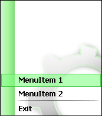

| |
| Главная · Последний выпуск · Архив · Авторы · О журнале · Исходники.RU | |
Красивые ...Автор: Der Peti@Часть первая. Красивые окна. Часть вторая. Красивый ListBox. Рецензия на статью. Часть третья. Красивый PopupMenu. Для начала откомпилируйте исходник этого урока и посмотрите, что получится в итоге. Так вам будет легче понять, что я тут дальше написал. Кликните правой кнопкой. Правда, красиво? Итак, начнём с общих концепций. В Интернете хватает статей, как приукрасить всплывающие менюшки, рисуя их через OwnerDraw-функции (как мы ListBox во второй части). Например, эта. Но таким способом что-то очень красивое всё равно не нарисуешь. Как сделать, чтоб "выделение" плавно "ездило" за курсором (это я расскажу в этой части)? Как сделать, например, всплывающее меню с ComboBox'ом (это уже сделаете сами, когда прочитаете статью ?)? Мне продолжать? Ладно, ближе к делу. procedure TPopupForm.FormCreate(Sender: TObject); begin // Изначально меню "спрятано" State := False; // Убираем границы окна BorderStyle := bsNone; // Прозрачность AlphaBlend := True; // Если это будет всплывающее меню для какой-нибудь // программы, сидящей в трее, то, чтоб при появлении // меню не перекрывалось таскбаром оставьте эту строчку FormStyle := fsStayOnTop; // Подгоняем размеры формы под размеры фонового рисунка Width := BackgroundImage.Width; Height := BackgroundImage.Height; end; Переменная State (должна быть описана как глобальная) будет отвечать за состояние меню: появление или пропадание. По-аналогии с PopupMenu напишем процедуру вызова меню. type
TPopupForm = class(TForm)
...
public
{ Public declarations }
procedure Popup(X,Y: Integer);
end;
И код процедуры procedure TPopupForm.Popup(X,Y: Integer); begin Первым делом надо сделать меню видимым. Если это просто всплывающее меню, то можно написать «Show;», но если это меню будет всплывать по клику по значку в трее, то чтоб в таскбаре не появлялась наша программа, напишите вариант с ShowWindow. // Делаем окно видимым // Если меню для трея то используйте ShowWindow // ShowWindow(Handle,SW_SHOWNORMAL); Show; Далее нашей форме нужно задать координаты X,Y. Обычно все менюшки появляются справа и снизу от курсора. Но есть одно «но». Кликните правой кнопкой на рабочем столе (курсор при этом должен находиться почти впритык к правому краю экрана). Видите? Когда для меню справа недостаточно места для его полного отображения, оно "вываливается" влево. То же самое будет, если покликать внизу экрана. Как узнать хватает ли справа места? Воспользуемся функцией GetSystemMetrics, которая может вернуть нам ширину/высоту экрана. А дальше – математика. От ширины отнимаем координату X, и, если разность больше ширины меню, то места справа хватает. if ( GetSystemMetrics(SM_CXSCREEN) - X ) < Width then
Left := X - Width // меню вываливается влево
else
Left := X; // меню вываливается влево
if ( GetSystemMetrics(SM_CYSCREEN) - Y ) < Height then
Top := Y - Height // меню вываливается вверх
else
Top := Y; // меню вываливается вниз
Далее окно нужно перевести в режим появления и поставить начальную прозрачность 0, то есть сделать окно полностью прозрачным. // Переводим окно в режим появления State := True; // Стартовая прозрачность 0 AlphaBlendValue := 0; В Windows есть такое понятие – ForegroundWindow, то есть активное окно. В Windows XP заголовок активного окна тёмно-синий, а у всех остальных светло-синий. Наше меню-окно тоже надо сделать активным. // Делаем окно активным SetForegroundWindow(Handle); Как вы заметили, наше окно появляется "плавно" то есть его прозрачность плавно изменяется от 0 до 255. Это можно делать с помощью таймера или при помощи процедуры "повешенной" на сообщение WM_TIMER. Но поскольку эта статья для широких масс, то напишу вариант с таймером. Заключительной строчкой процедуры Popup будет запуск таймера. // Запуск таймера Timer1.Enabled := True; end; А теперь сам таймер. Киньте на форму таймер, сделайте его изначально выключенным (Enabled -> False) и поставьте интервал 1. Напишем процедуру OnTimer. procedure TPopupForm.Timer1Timer(Sender: TObject);
begin
FormStyle := fsStayOnTop;
if State then
begin
// Форма в режиме появления
if AlphaBlendValue < 255 then
begin
// Если форма ещё полупрозрачна, то уменьшаем прозрачность
AlphaBlendValue := AlphaBlendValue + 15;
end;
end else
begin
// Форма в режиме пропадания
if AlphaBlendValue > 10 then
begin
// Если форма ещё полупрозрачна, то уменьшаем прозрачность
AlphaBlendValue := AlphaBlendValue - 25;
end else
begin
// Когда форма уже почти совсем не видна закрываем её.
Close;
end;
end;
end;
Как видно из кода, меню будет появляться чуть-чуть медленнее, чем пропадать. Осталось только к нашей первой форме (та, которая с ListBox'ом) привязать эту менюшку. Делается всё совсем просто. При отпускании кнопки мыши на форме проверяем, что была нажата именно правая кнопка, узнаём текущие координаты курсора и вызываем метод Popup нашей формы-меню.
procedure TForm1.FormMouseUp(Sender: TObject; Button: TMouseButton;
Shift: TShiftState; X, Y: Integer);
var
Point: TPoint;
begin
// Проверяем, что была отпущена именно правая кнопка
if Button = mbRight then
begin
GetCursorPos(Point); // Узнаём координаты курсора
PopupForm.Popup(Point.X, Point.Y);
end;
end;
У вас может возникнуть логичный вопрос: почему при вызове Popup нельзя передать координаты X и Y из самой процедуры OnMouseUp? Отвечаю: в процедуру OnMouseUp нам подставляются X и Y, где за точку (0,0) считается левый верхний край формы, а нам нужен левый верхний угол экрана. Запускайте. ...
if State then // Окно находиться в режиме появления?
if GetForegroundWindow <> Handle then // Окно перестало быть активным?
State := False;
end;
Итак, половину уже сделали. Далее сделаем выделение. Кидаем на форму TImage и обзываем его Selection. Это будет картинка выделения. Чтоб было красиво, засуньте в Selection иконку. Я для этих целей использовал программу AWIcons. Накидайте ещё парочку TLabel'ов - это будут наши разделы меню. У меня их будет три: ExitLabel (Left: 32; Top: 175), Label1 (Left: 32; Top: 150) и Label2 (Left: 32; Top: 127). Шрифт в TLabel'ах я использовал Tahoma bold 9. Теперь можно было бы схалтурить: в OnMouseMove для TLabel'ов задавать подходящую высоту для Selection и всё, но мы же хотим, чтоб оно "ездило". Заведите глобальную переменную NeededTop - это будет, та высота, которая должна быть у Selection, но заметьте, что реальная высота и нужная могут не совпадать. По-умолчанию присвойте этой переменной значение 124. Теперь напишем обработчик движения мыши по BackgroundImage. Просто узнаём каждый раз положение курсора и, зная его положение, определим, напротив какого TLabel'а сейчас находится курсор, и зададим соответствующее значение переменной NeededTop. Всё числа найдены путём подбора. procedure TPopupForm.BackgroundImageMouseMove(Sender: TObject; Shift: TShiftState; X, Y: Integer); var Point: TPoint; begin GetCursorPos(Point); // Узнаём положение курсора Point.Y := Point.Y - Top; // Y относительно высоты формы NeededTop := 124; // Максимальная высота if Point.Y > 171 then begin NeededTop := 171; Exit; end; if Point.Y > 147 then begin NeededTop := 146; Exit; end; if Point.Y > 124 then begin NeededTop := 124; Exit; end; end; Научим выделение ездить. Поместите на форму ещё один таймер, задайте интервал 2 и в обработчике напишите: procedure TPopupForm.Timer2Timer(Sender: TObject);
begin
// Выделение ниже нужной высоты
if Selection.Top > NeededTop then
Selection.Top := Selection.Top - 3;
// Выделение выше нужной высоты
if Selection.Top < NeededTop then
Selection.Top := Selection.Top + 3;
// Расстояние до нужной высоты меньше шага
if abs(Selection.Top - NeededTop) < 3 then
Selection.Top := Selection.Top;
end;
Вот вам ещё обработчик кликов. Как узнать, по какому TLabel'у кликнули? По тому, который сейчас активен (можно определить, используя NeededTop). Эта процедура должна быть общей для всех TLabel'ов и Selection. procedure TPopupForm.SelectionClick(Sender: TObject);
begin
case NeededTop of
124: begin // Label2
end;
146: begin // Label1
end;
171: begin // ExitLabel
Application.Terminate;
end;
end;
end;
Вот и всё. Надеюсь, парочка этих статей поможет сделать вам вашу программу красивее Скачать исходник: lesson3.rar (58 кб) С уважением, Der Peti@! |
| Журнал "Исходники.RU". Copyright (c) 2006 by Исходники.RU. Designed by Mastilior, Made up by ...:::Alex:::.... |
{kind=link}